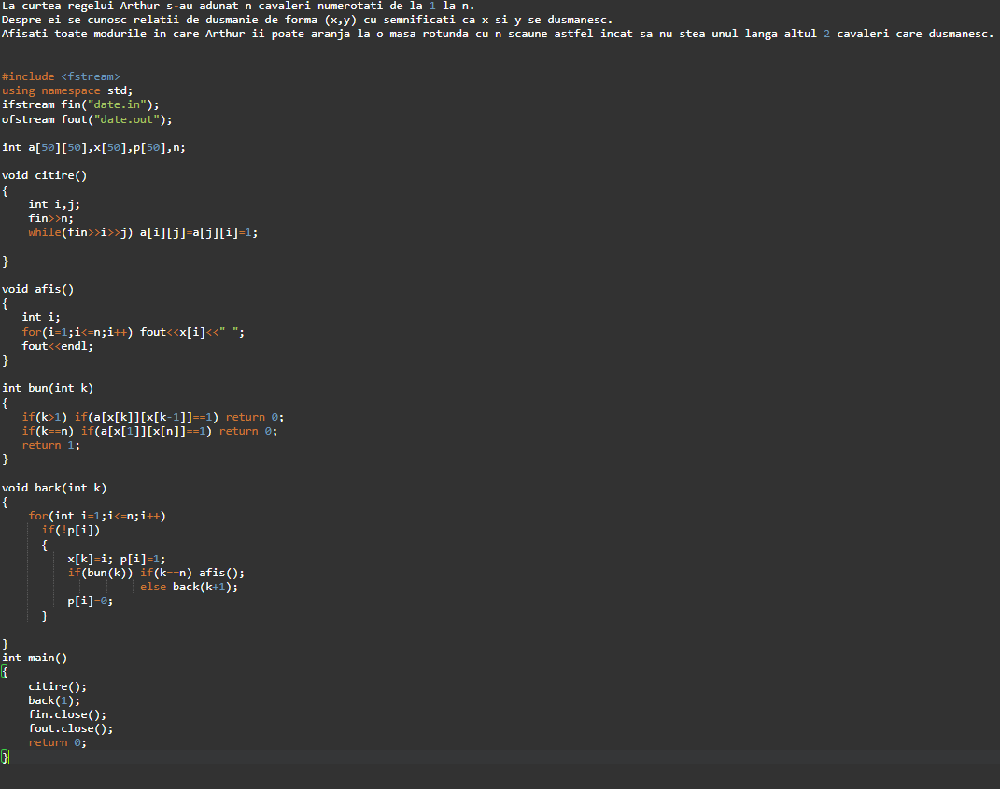
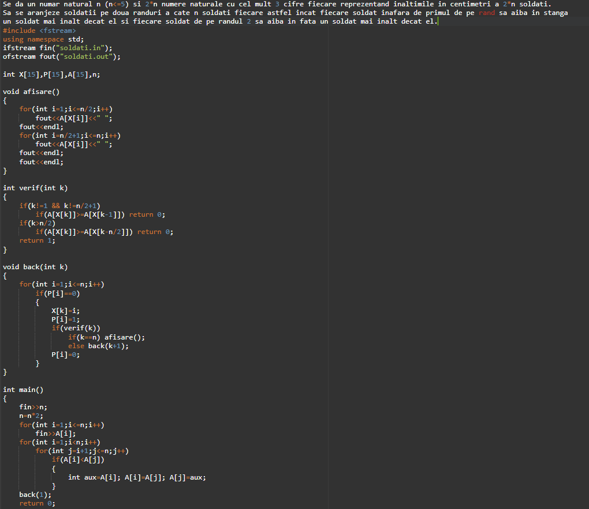
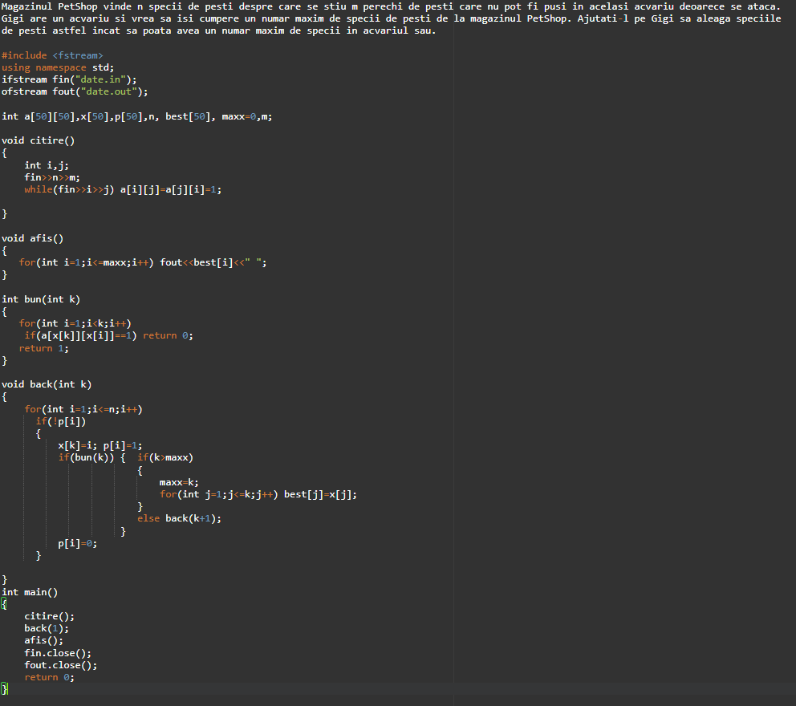

Metoda Backtracking se aplica problemelor in care solutia poate fi reprezentata sub forma unui vector – x = (x1, x2, x3, …xk,… xn) € S, unde S este multimea solutiilor problemei si S = S1 x S2 x… x Sn, si Si sunt multimi finite avand s elemente si xi € si , (¥)i = 1..n. Pentru fiecare problema se dau relatii intre componentele vectorului x, care sunt numite conditii interne; solutiile posibile care satisfac conditiile interne se numesc solutii rezultat. Metoda de generare a tuturor solutiilor posibile si apoi de determinare a solutiilor rezultat prin verificarea indeplinirii conditiilor interne necesita foarte mult timp. Metoda backtracking evita aceasta generare si este mai eficienta. Elementele vectorului x, primesc pe rand valori in ordinea crescatoare a indicilor, x[k] va primi o valoare numai daca au fost atribuite valori elementelor x1 x[k-1]. La atribuirea valorii lui x[k] se verifica indeplinirea unor conditii de continuare referitoare la x1…x[k-1]. Daca aceste conditii nu sunt indeplinite, la pasul k, acest lucru inseamna ca orice valori i-am atribui lui x[k+1], x[k+1], .. x[n] nu se va ajunge la o solutie rezultat.
|  |  |  |